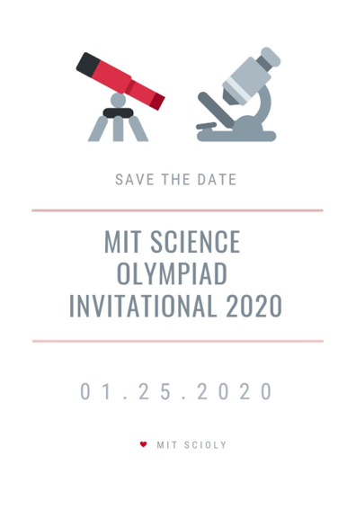

February 1, 2020
Thanks to all teams who participated in the 2020 MIT Science Olympiad Invitational! Full results, exams, answer keys, and other followup items have been posted on our results page.
Thanks to all teams who participated in the 2020 MIT Science Olympiad Invitational! Full results, exams, answer keys, and other followup items have been posted on our results page.
Thank you all for attending our 6th MIT Science Olympiad Invitational this past Saturday. Your fantastic teams are why we choose to run the tournament year after year. We have important information to convey to you all regarding the scoring of the tournament. Since the awards ceremony on Saturday, a few scoring issues were brought to our attention. Over the past few days, we’ve worked very hard to make sure we were as thorough as possible in ascertaining the situation and wanted to provide you all with an update as soon as possible. This post details the update.
During our post-tournament wrap-up, a few errors in the final scoring were discovered. First, two teams had their scores swapped accidentally during grade entry into our scoring system for gravity vehicle. This has since been fixed, and neither medal placements nor trophy placements were impacted. Second, we encountered a major issue with the Excel scoresheet distributed online by the National Science Olympiad website (found here) for Sounds of Music. It was brought to our attention by our Sounds of Music Event Supervisor after the tournament who noticed that the teams with more pitch score error appear to be scoring higher than those with less. After additional investigation, it was found that the formula being used to calculate the pitch score was incorrect if the DATAMODE used on the spreadsheet was CENTS. Because this has potentially impacted several of the tournaments that have already happened, we have included more information below so that tournaments may check if this error occurred in their scoring.
We have since contacted National Science Olympiad about the error of its scoresheet on the soinc.org website, and National Science Olympiad has since rectified the error and uploaded a corrected spreadsheet (version 0.5).
All corrected scores for Sounds of Music have been entered into Avogadro. This changes the medal placements of Sounds of Music.
These score changes also affect the overall team rankings.
The scoring issue occurs when using version 0.4 of the score sheet. The fix has since been applied to version 0.5 which is the current online version as of this post. It also appears that v0.5 unhides the originally hidden columns, so event supervisors should use care to avoid modifying anything in that range.
By following the steps below, we will show that a team that should receive a zero on the Pitch Score (PS) will in fact receive a perfect PS.
This mistake is due to an error in the Excel formula used for calculating the Absolute Cents Error in hidden columns BG through BN. If CENTS is selected as the DATA MODE, the formula directly uses the value entered by the Event Supervisor (located columns M through T). According to rule 5.b.iii.1, the correct calculation is to take the absolute value of the error from the target frequency. The formula appears to take the absolute value when FREQUENCY is selected as the DATA MODE, so this error manifests only when cents are used as the unit instead of frequency.
If a team scores below -3, the spreadsheet tests if the Cents value is less than or equal to 3 (as per 5.b.iii.3.c). With the negative value, this conditional evaluates to true and gives the team a full IPS score. This also guarantees a perfect PS. The correct result should display and IPS score of 0.
We hope you are all excited for our tournament this Saturday, January 25! This post contains very important information about the tournament day and registration. The details are summarized here, but please follow all links to make sure you are fully informed.
Registration is mandatory for all teams—one coach from each school must come to registration.
You can attend registration on either Friday, January 24 from 5-7 PM or on Saturday, January 25 from 6-8 AM. You must attend registration during one of these times, but there is no need to go to both times. Registration will be held in HQ: 10-105, known as the Bush Room.
For more important details, please see Info for Teams.
Once you are on campus, if you or any team members as an urgent medical emergency, please call the MIT Police at 617-253-1212. Please do not call 911 because the MIT Police are more familiar with the MIT campus and can respond more quickly.
For more important information about emergency procedures, please read Health and Safety.
For any Science Olympiad-related emergencies during the competition, please contact one of the following three members of our team:
Their phone numbers have been included in an email to team coaches. Example emergency situations are: your students are very lost and are about to be late to an event, your homeroom is locked, etc.
Please note that there are accessible entrances to all MIT buildings and elevators in all MIT buildings. If you need any specific accommodations, please let us know. If you need help finding an accessible entrance/elevator the day of, please find a volunteer or have someone come to HQ.
There will be a lactation room available at 3-369. If you need to use this room, please respond to this email noting that and we will provide you with the code.
Arbitration will take place in Tournament HQ which is in the Bush Room (10-105). Please see our Tournament Policies for the full process.
As per the Event Schedule, the Awards Ceremony will take place at 7 PM in Kresge Auditorium (W16-109). Please note that there is limited seating, so only 15 students + 1 coach will be allowed to enter the main auditorium per team (we will be checking wristbands). There will be assigned seating by team.
Please read all the additional details on our Awards Ceremony page.
Please check out our brochure for the 2020 tournament which contains overviews of all important day-of information.
Please check out our Tournament Policies page for details about our wristband policy.
IMPORTANT: YOU (i.e. anyone related to your team, be it parent, coach, competitor, or alternate, or other) MUST NOT ENTER ANY EVENT ROOMS BEFORE 7:30 AM ON SATURDAY, JANUARY 25. If you do so, your team will be disqualified from the event in question. This is due to fairness of competition and the specifics of our room reservations—if you enter rooms outside of competition time, we may lose room reservation privileges.
You can find the locations of all events on our event schedule. As stated on our tournament policies page, we will be running national rules for all events.
For detailed information regarding events, please see our event info page. This page also contains detailed information about the venues for Wright Stuff and Ping Pong Parachute.
See the brochure for nearby food options and attractions. We will be providing breakfast and lunch for coaches—please pick up breakfast and lunch at HQ (10-105, Bush Room).
Homerooms have been finalized. Check the team list for your team number and home room.
Please note the following as classroom policy. Please do not eat or drink in classrooms and notify the Planning Committee at HQ (10-105, Bush room) if there are any major spills/mess made. You can come to our HQ to get additional trash bags; you can leave filled trash bags right outside of your homeroom and the custodial service will collect them throughout the day.
When leaving your homeroom at the end of the day, please make sure to:
Please see our Travel page for more information on parking and commute options.
There will be no public printing available on MIT campus.
We are still working on scheduling extra tours of MIT campus. As of now, note that there are some MIT tours on Friday: please visit the website for scheduling.
If you preordered t-shirts, you can pick them up on Saturday at HQ (10-105, Bush Room). Please bring cash or check as payment. If you did not preorder t-shirts but would like to purchase them, we will be selling any extra t-shirts we have for $15 each; however, we cannot guarantee we will have extra shirts.
We have finalized our venues for Ping Pong Parachute and Wright Stuff. Ceiling height details and photos can be found on our events page.
Self scheduling will be opening today (December 10) at 5 PM EST. All teams who filled out the roster form by the December 5 deadline have been added to our Avogadro tournament and should now be able to access the tournament. For more detailed instructions, see this step-by-step guide.
If you have any problems during the self-scheduling process, please email scioly-web@mit.edu for the fastest response time.
If you have not already filled out the form or did not provide us with your username, then you should fill out that form immediately. Please see the Required Forms page. Self-scheduling slots fill up on a first-come-first serve basis, so we will be monitoring the submission page to try and process late roster form submissions in the order they are received but bear in mind that there may be delays of possibly a couple hours for you to be added.
Required forms have been posted on the Required Forms page. The first deadline is this Thursday, December 5, 2019. There is also more information posted about self-scheduling, so be sure to check that out!
Registration for the 2020 MIT Science Olympiad Tournament is now closed! Thank you to everyone who signed up! Please be on the lookout for an email from us regarding your acceptance status. In the meanwhile, check out the full timeline and details on our registration page.
The registration period for the 2020 MIT Science Olympiad Tournament is now open! Head over to the registration form to sign up! Please keep in mind that this form will be open until September 23, 2019. There is NO semblance of a first-come-first-serve policy. Speed will not be a factor, so please take your time to ensure that your form is completed accurately. For more details, check out the registration page.
Event Supervisor applications are open! If you are interested in becoming an event supervisor for the 2020 MIT Invite, please fill out one of the two forms below:
First-time MIT Supervisors Form (i.e. you have not supervised for us before)
Returning MIT Supervisors Form
Applications will close at 9 PM EST on October 1, 2019
TL;DR: Registration will be open from Wednesday, September 18th, 2019 at 6PM EST to Monday, September 23rd, at 6PM EST. The form is located here.
We are pleased to announce that registration for the 6th annual MIT Science Olympiad Invitational Tournament will open on Wednesday, September 18th, 2019 at 6PM EST. The form can be accessed here and will close promptly the following Monday, September 23rd, at 6PM EST. Teams will be notified of their acceptance on Wednesday, September 25th, and a public list of participating teams will be announced on Wednesday, October 9th.
As stated previously, the tournament will take place on Saturday, January 25th at the MIT campus in Cambridge, Massachusetts. We will be running all 23 Division C national events, including lab and engineering events, with a schedule mirroring the National Tournament schedule as closely as possible. All events will be written, reviewed, and run by Science Olympiad alumni currently at MIT, national tournament event supervisors, and/or former Science Olympiad competitors from the highest level of competition. This means that coaches will not be required to write tests or otherwise volunteer at the invitational, leaving them free to focus solely on coaching their own teams.
A new system of accepting teams will be implemented for this registration cycle. We have eliminated the tier-system, and will instead guarantee acceptance of schools that meet either of the following qualifications:
All teams that do not meet the qualifications for guaranteed acceptance will have their acceptance determined by a lottery. As we continue to grow our tournament, we aim to maintain a diverse pool of competitors while also upholding the rigor of our tournament. As such, we still strongly encourage all teams to apply, especially Massachusetts teams, regardless of their reputation or experience level.
Schools that would like to bring two teams can fill out an additional question on the registration form regarding why they need to bring two teams— the answers will be reviewed to make sure as many teams are satisfied as possible.
Please do not hesitate to contact us if you have any questions. We look forward to the upcoming season!
We are pleased to announce that the sixth annual MIT Science Olympiad Invitational Tournament will be held on Saturday, January 25th, 2020, on the campus of the Massachusetts Institute of Technology in Cambridge, MA.
We will be running all 23 Division C national events, including lab and engineering events, with a schedule mirroring the National Tournament schedule as closely as possible. All events will be written, reviewed, and run by Science Olympiad alumni currently at MIT, national tournament event supervisors, and/or former Science Olympiad competitors from the highest level of competition.
We would also like to welcome Thomas Xiong (‘21) to join Alice Lin (‘20) as our tournament directors for the 2020 season as we say goodbye to Joshua Segaran (‘19) and wish him luck on his future endeavors.
Tournament registration will open mid-September. Follow us on Facebook and Instagram to stay updated with our team.
We look forward to welcoming you all next January!
